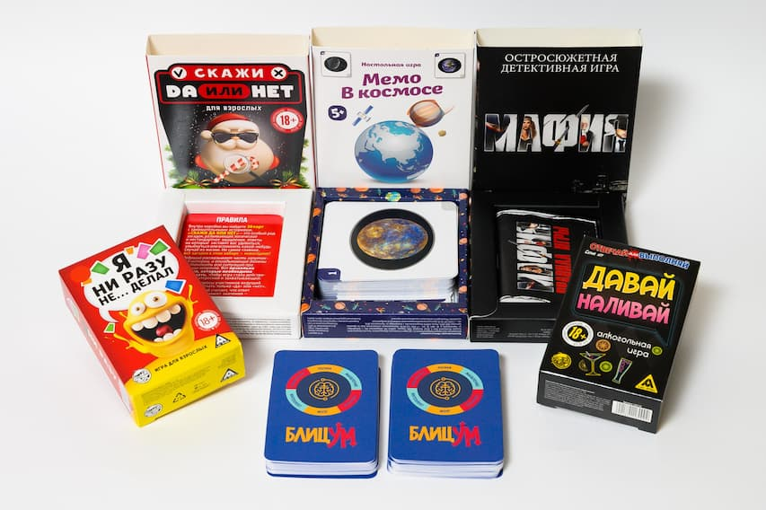

Карты — это больше, чем игра. Это традиции, стратегия и эмоции, которые объединяют поколения. В «ИПК Лазурь» мы не просто печатаем карты — мы создаем их с безупречным качеством, чтобы каждая колода стала вашим надежным спутником в мире азарта и развлечений.

Первые игральные карты появились в Китае в IX веке, а в Европе они стали популярны благодаря точности изготовления и доступности. Интересный факт: в XV веке французские мастера стандартизировали масти (черви, бубны, трефы, пики), что позволило картам стать универсальным инструментом для игр по всему миру.
В «ИПК Лазурь» мы сохраняем эту многовековую традицию, сочетая ее с современными технологиями производства. Наши карты — это эталон долговечности и функциональности.
Мы используем высокоточное оборудование и проверенные материалы: плотный мелованный картон (300 г/м²) и износостойкое лаковое покрытие. Это гарантирует, что карты не деформируются, не выцветают и сохраняют гладкость даже после тысяч партий.
Нужны карты с логотипом для корпоратива? Особый размер или форма для промоакции? Мы реализуем любые технические задачи, точно следуя вашему техническому заданию.
Каждая партия проходит проверку на отсутствие дефектов печати, совпадение цветов и четкость линий. Мы ценим ваше время — вы получаете продукт, готовый к использованию.
Чтобы карты служили дольше:
Мы не рисуем шедевры — мы создаем инструменты для ваших шедевров. Будь то турнир по покеру, семейный вечер или промо-акция, наши карты обеспечат безупречный результат.
P.S. Обращайтесь к нам за крупными партиями: мы готовы выполнить срочные заказы без потери качества. Ваша игра — наша ответственность!